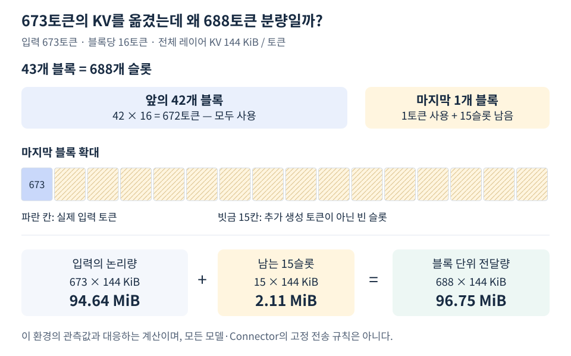

P/D의 전송 비용을 이해하려면 입력 토큰이 얼마만큼의 K·V를 만드는지 계산해야 한다. 여기서는 전체 Attention 레이어의 KV를 BF16으로 보관하는 Qwen3-8B, TP=1 예시를 사용한다. 다른 캐시 구조·압축·dtype에 같은 숫자를 적용하지 않는다.
토큰 한 개도 모든 레이어에 K와 V를 가진다
모델 설정에서 확인한 값은 레이어 36개, KV Head 8개, Head 차원 128, 원소당 2 bytes다. Q Head 수가 아니라 KV Head 수를 사용한다. Q는 이 계산의 캐시 대상이 아니다.
토큰당 KV bytes
= 레이어 수 × KV Head 수 × Head 차원 × 2(K,V) × 원소 크기
= 36 × 8 × 128 × 2 × 2
= 147,456 bytes = 144 KiB
673토큰의 논리량
= 673 × 147,456
= 99,237,888 bytes = 94.640625 MiB
여기서 MiB는 1024² bytes다. 모델 가중치 크기가 아니라 이 입력을 처리해 생긴 KV 상태를 계산한 값이다.
계산에 사용한 KV Head 8개는 이 모델의 GQA 구조에 해당한다. 따라서 위 값에는 GQA 절감이 이미 반영되어 있으며 다시 줄이면 안 된다. Head가 왜 8개인지와 같은 조건의 MHA 대비 크기는 GQA와 KV 크기의 관계에서 설명한다.
실제 전달은 블록 경계로 올림될 수 있다
관찰된 요청은 KV 블록 43개를 전달했다. 이 환경의 블록 크기는 16토큰이므로 마지막 블록에도 슬롯이 남는다.

정확한 계산은 ceil(673 / 16) = 43블록, 43 × 16 = 688슬롯이다. 전달량은 688 × 147,456 = 101,449,728 bytes, 논리량과의 차이는 15 × 144 KiB = 2.109375 MiB다.
이 추가 분량을 15개의 생성 토큰, 중복 Prefill 또는 프로토콜 헤더라고 해석하지 않는다. 토큰의 논리 길이와 블록 단위 데이터 범위가 다르다.
블록 ID 목록은 캐시 그룹별로 중첩된다. [[...43개...]]의 바깥 길이 1을 “블록 1개”로 세지 않는다. 또한 로그의 block length가 bytes 단위인지 토큰 단위인지 구분해야 한다.
길이별 관찰과 일치하는지 대조한다
| 입력 토큰 | 16토큰 블록 수 | 전송 슬롯 | 관찰된 건당 전송량 |
|---|---|---|---|
| 128 | 8 | 128 | 18.00 MiB |
| 673 | 43 | 688 | 96.75 MiB |
| 2048 | 128 | 2048 | 288.00 MiB |
673만 블록 경계에 딱 맞지 않아 올림이 발생한다. 위 계산은 보존된 Prefill 메타데이터와 길이별 측정 결과의 전송 바이트와 대응한다.
일반화할 때는 입력 토큰 수뿐 아니라 캐시 레이아웃, TP 분할·복제, 실제 전송 범위와 블록 크기도 확인해야 한다. 96.75 MiB를 모든 673토큰 모델 요청의 고정 비용으로 쓰면 안 된다.